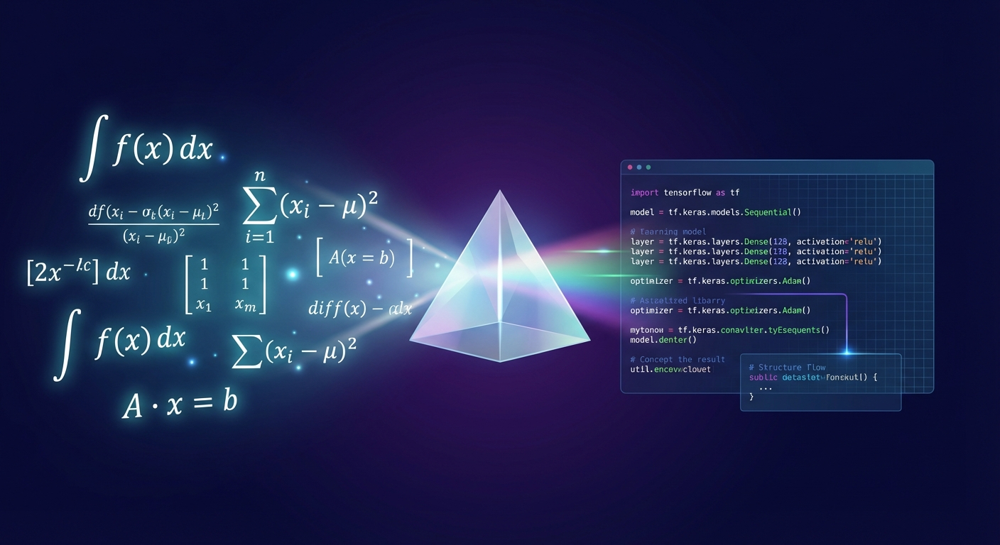

Neural Network Layer Designer
Bridge the gap between intuition and implementation. Design custom layers with rigorous mathematical analysis, stability proofs, and auto-generated code.
Try the Simulator
Bridge the gap between intuition and implementation. Design custom layers with rigorous mathematical analysis, stability proofs, and auto-generated code.
Try the Simulator
Get a high-level overview of your layer's capabilities, including computational cost, training difficulty, and decision criteria for when to use it.
Automatically derive forward equations, backward pass gradients (Chain Rule), and higher-order derivatives like the Hessian.
Generate production-ready code in TensorFlow.js, Python (PyTorch/NumPy), or pseudocode, complete with initialization logic.
Ensure convergence with Lyapunov stability analysis, Lipschitz continuity checks, and numerical stability warnings (overflow/underflow).
Understand the "why" with real-world analogies, visual data flow descriptions, and mental models for gradient behavior.
Evaluate time and space complexity for both forward and backward passes to optimize for memory bandwidth and parallelization.
Configure a layer definition on the left to see how the agent generates comprehensive analysis.
One-Liner: A gating mechanism that allows information to flow selectively based on a learned linear projection.

Think of this layer like a volume knob for specific frequencies in an audio equalizer. The "gate" decides how loud each feature should be. If the gate is closed (0), the feature is silenced; if open (1), it passes through unchanged.
Where ⊙ denotes the Hadamard (element-wise) product and σ is the sigmoid activation function.
Gradient w.r.t Input (∂L/∂x):
Where g is the gate activation σ(xW + b).
The forward function is Lipschitz continuous. The Lipschitz constant is bounded by:

Lyapunov Function Candidate: V(θ) = L(θ) - L(θ*)
Overflow Risk: Low. Sigmoid bounds gate values to (0, 1).
Underflow Risk: Moderate. If gate values approach 0, gradients for the main signal path vanish.
Recommendation: Initialize bias b_gate to a small positive value (e.g., 1.0) to start with gates open.
Rapidly prototype novel layer ideas. Get immediate feedback on theoretical properties like Lipschitz continuity and Hessian structure before writing a paper.
Generate optimized, numerically stable code for production. Understand the computational cost and memory footprint before deployment.
Create intuitive explanations and visualizations for complex neural network concepts. Use the "Analogy" generator to make abstract math concrete.